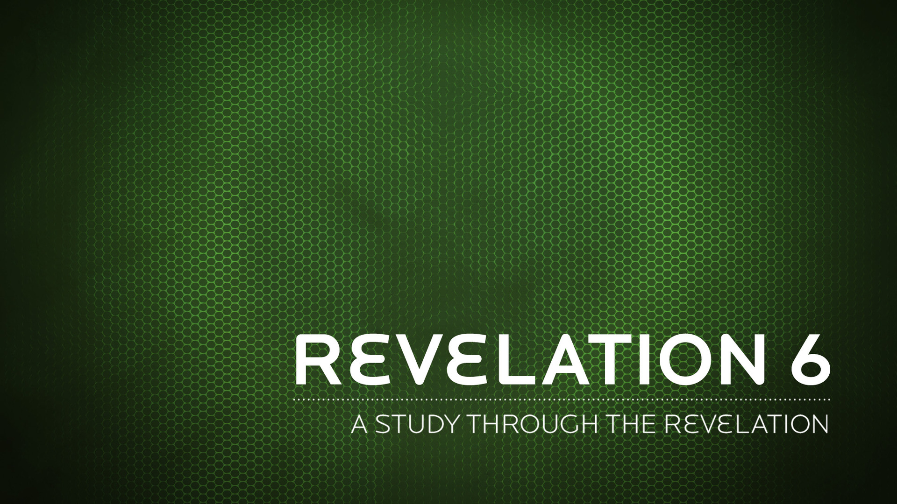

During that long period, the king of Egypt died. The Israelites groaned in their slavery and cried out, and their cry for help because of their slavery went up to God.
Exodus 2:23 NIV
In the fourth generation your descendants will come back here, for the sin of the Amorites has not yet reached its full measure."
Genesis 15:16 NIV